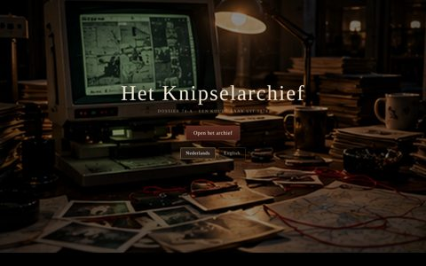
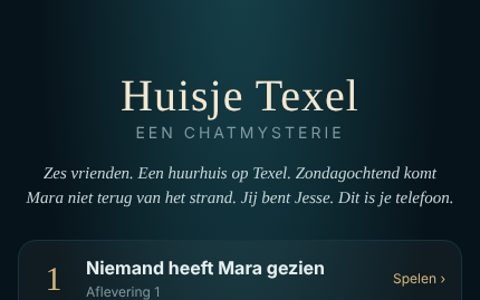

Enigma Mystery
Moordmysteries om te spelen, te lopen en te lezen.
Het bewijsbord
Vier sporen, één naam.
Online op je scherm, buiten op de been, op papier met een potlood, of samen met de kleintjes. Trek aan een draad.

Online
Mystery Spellen
Speel in je browser
23 zaken: verhalen, escape rooms in 3D, logicapuzzels en rustige bouwspellen.
- Waar
- Op telefoon of computer
- Duur
- 20 minuten tot een paar avonden
- Prijs
- Van elke soort één zaak gratis, de rest met Pro (eenmalig €3,99)

Buiten
Mystery Wandelingen
Loop de zaak zelf
Een moordzaak die je buiten oplost. De stad om je heen wordt de plaats delict.
- Waar
- Overal, met je telefoon in de hand
- Duur
- Ongeveer anderhalf uur
- Prijs
- Proefronde gratis; daarna € 9,95 per team

Op papier
Mystery Puzzels
Puzzelen met potlood
Gedrukte puzzelboeken vol moordzaken, van makkelijk naar moeilijk.
- Waar
- Aan tafel, in de trein, op vakantie
- Duur
- 100 puzzels per boek
- Nu
- Gratis proefverdieping online; boeken volgen

Voor de kleintjes
Mini Mystery
Speuren zonder moord
Raadsels en speurtochten voor jonge detectives.
- Waar
- Online en op pad
- Voor wie
- Kinderen, samen met een grote
Nieuw
Net binnengekomen op het bureau.

Verhaalzaken
ProHet Knipselarchief
Een koude zaak uit 1974. Alleen het archief weet het nog.

Verhaalzaken
ProHuisje Texel
Zes vrienden, één huurhuis, een telefoon vol berichten. Wie vertrouw jij?

Verhaalzaken
ProLaatst gezien 23:14
Haar telefoon. Haar laatste avond. Eén bericht dat zij nooit schreef.